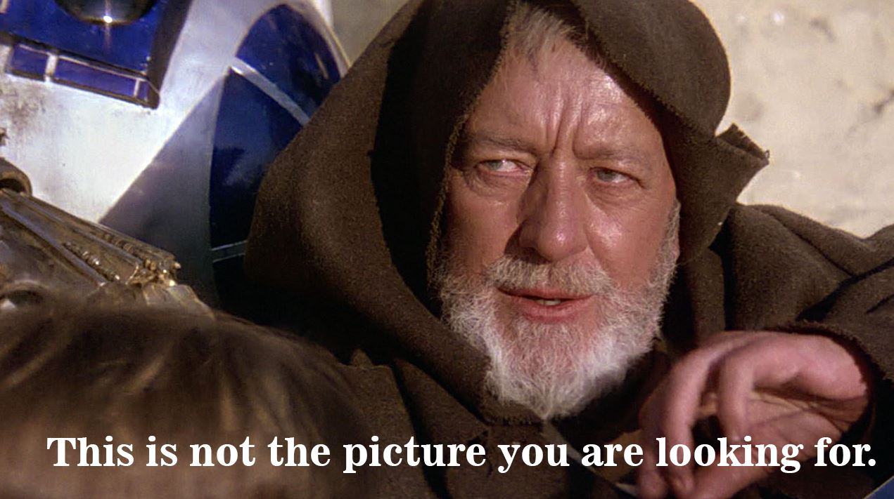

This is the box that I designed in CorelDRAW, I used the laser cutter to inscirbe my image onto the surface of the cardboard, I used a mixture of rastering and vectoring cuts to create my design and cut out the pieces.

This is my final result for the box I created.
Second, I made a press fit kit using CorelDRAW and the laser cutter, I made hairline cuts for the laser to cut out the pieces of cardboard.

Here is my final design for the press fit kit!!!!
Next I made a cork coaster designed again in CorelDRAW and laser inscibed the image onto a circular cork coaster.
Lastly, I designed a Skyrim themed lether bracelet that has all the Skyrim holds inscribed on it.
CDR File (.cdr)